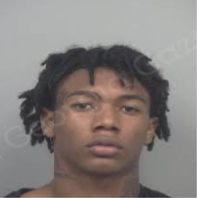
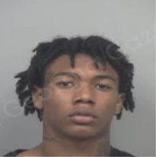

Why I like Osamason
I like Osamason because his music style is different. He is so versatile and unique and stands out amongst the underground artists. My favorite song from him is “Mortal Kombat!” which I first heard in 2022. I was instantly hooked on it. I still listen to that song almost daily, it never gets old. I can always go back and listen to his old music and get the same joy from it. His voice is unlike any other artist and he is very creative and original with his style and fashion. He also produces a lot of his music which makes him even more impressive and talented. He’s a very inspirational artist to me because he does what he wants and does it well. He is one of my favorite artists of all time.
Why I like Glokk40spaz
Glokk40spaz is another underground artist I like. His music goes very hard and it is just fun to listen to. He has a southern style to him since he’s from Atlanta. His music feels very real and authentic, he is not trying to copy anybody. One of my favorite songs from him is “ROT.” I first heard it on SoundCloud back in 2022 and I was amazed. I had never heard anything like it before. His flow was crazy and the beat was wild. It was raw and real. His lyrics are aggressive but motivational. He raps about his experiences and emotions with a lot of energy. It makes me want to work harder and stay focused. He also has a unique voice and cadence which makes him stand out. Overall, Glokk40spaz makes music that makes me feel something and that’s why I respect him.